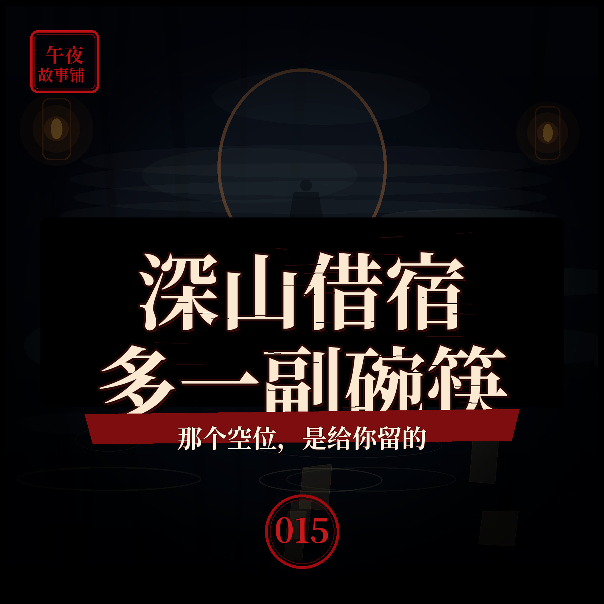

进山借宿那户人家，桌上永远多摆一副碗筷
那副碗筷不是给客人的，是给那个还没来的人留的

简介
我和老周进山测绘，迷了路，天黑前找到山坳里唯一一户亮灯的人家借宿。主人一家很客气，留我们吃饭住下。可那张饭桌上，明明只有四个人，却摆了五副碗筷。我问那多出来的一副是给谁的，主人笑着说，给还没回来的人留的。那一夜我才明白，他们等的那个人，就是我们当中的一个。本故事为原创虚构民间异闻演绎，请勿代入现实。
标签
- 民间故事
- 异闻
- 悬疑
- 怪谈
- 睡前故事
- 深山借宿
那副碗筷不是给客人的，是给那个还没来的人留的

我和老周进山测绘，迷了路，天黑前找到山坳里唯一一户亮灯的人家借宿。主人一家很客气，留我们吃饭住下。可那张饭桌上，明明只有四个人，却摆了五副碗筷。我问那多出来的一副是给谁的，主人笑着说，给还没回来的人留的。那一夜我才明白，他们等的那个人，就是我们当中的一个。本故事为原创虚构民间异闻演绎，请勿代入现实。